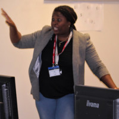

|  |
Lorraine Olowosuko
Business Analyst
I am a highly accomplished professional business analyst working in BJSS. I have full end to end delivery experience.
Over 10 years’ experience and a verifiable track record in business analysis, project management, service management, product development, software testing and application support. Working within an Agile team leading projects from concept
to delivery and post support. Fluent communicator with a positive can-do attitude, strong teamwork ethic, problem-solving, critical thinking and decision-making skills,
combined with a pragmatic approach, ability to influence at all levels of the business and sound business acumen
|